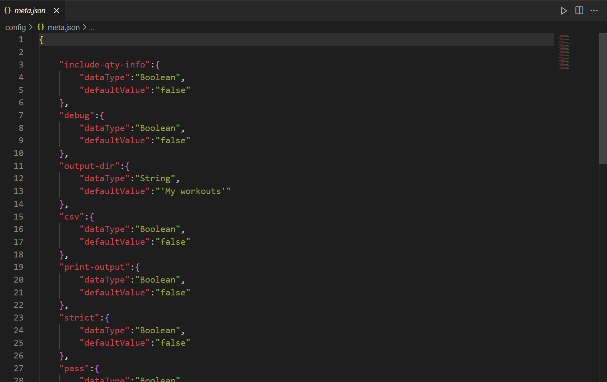

The meta clause
The
Below is the exhaustive list of the default available attributes in the
meta: clause is, as its name suggests for meta data.
For example if you want to save your workouts as a .csv file, you need to include the csv flag in the meta: clause.
Below is the exhaustive list of the default available attributes in the
meta: clause
| Attribute | Data Type | Description | Default Value |
|---|---|---|---|
| output-dir | String | Specifies the output directory path whereby files should be saved if need be. | "My workouts" |
| csv | Boolean | Flag specifying whether workout should be saved as .csv file at path specify by output dir. |
False |
| print-output | Boolean | Specifies whether the generated workout should be printed to the standard output. | False |
| pd-print | Boolean | Specifies whether the generated workout should be printed to the standard output. But this uses the pandas library to do so. You need to have pandas install on your machine. | False |
| script | Boolean | Specifies whether the workout script should be saved at path specify by output dir. |
False |
| db | Boolean | Specifies whether the generated workout should be saved to your specified database. You need to have a database set up and configured for this. | False |
| exclude-unit | Boolean | Specifies whether quantity units should be included when saving as .csv/printing your workouts. For example, if exclude-unit is true 10kg will be printed/saved as is, otherwise only 10 will be printed/saved. |
False |
| db | Boolean | Specifies whether the generated workout should be saved to your specified database. You need to have a database set up and configured for this. | False |
| pass | Boolean | Special attribute. It has no real purpose for the interpreter but allows you to have an "empty" meta: clause. Since the meta: clause can't be empty, you can just include pass if you have no other attributes you want to change. It does not matter if pass is true or false. |
False |
The default value of any attribute can be changed. To do so, you need to go to
config/meta.json.
pd-print
# workout with a single set # just for the sake of example meta: pd-print workout: 63kg # weighed 63 kg before working out 62.5kg # weighed 62.5 kg after working out 18:00 1h30min # workout started at 18:00 and lasted for one and a half hour # the duration will be automatically calculated set: "squat" 1-15 25kg # did 15 rep of squats with 25kg on the barbell
The output should look something like this below
workout
id date body-weight-before body-weight-after start-time duration \
0 -1 17-05-22 63kg 62.5kg 18:00:00 01:30:00
end-time session mood last-meal last-bowel-movement
0 19:30:00 NaN NaN NaN NaN
sets
wID setID exID repID CumRep exercise-name exercise-execution \
0 -1 1 1 1 1 squat Normal
1 -1 1 1 2 2 squat Normal
2 -1 1 1 3 3 squat Normal
3 -1 1 1 4 4 squat Normal
4 -1 1 1 5 5 squat Normal
5 -1 1 1 6 6 squat Normal
6 -1 1 1 7 7 squat Normal
7 -1 1 1 8 8 squat Normal
8 -1 1 1 9 9 squat Normal
9 -1 1 1 10 10 squat Normal
10 -1 1 1 11 11 squat Normal
11 -1 1 1 12 12 squat Normal
12 -1 1 1 13 13 squat Normal
13 -1 1 1 14 14 squat Normal
14 -1 1 1 15 15 squat Normal
resistance-type type external-resistance percentage-execution \
0 Barbell Hypertrophy 25kg 100%
1 Barbell Hypertrophy 25kg 100%
2 Barbell Hypertrophy 25kg 100%
3 Barbell Hypertrophy 25kg 100%
4 Barbell Hypertrophy 25kg 100%
5 Barbell Hypertrophy 25kg 100%
6 Barbell Hypertrophy 25kg 100%
7 Barbell Hypertrophy 25kg 100%
8 Barbell Hypertrophy 25kg 100%
9 Barbell Hypertrophy 25kg 100%
10 Barbell Hypertrophy 25kg 100%
11 Barbell Hypertrophy 25kg 100%
12 Barbell Hypertrophy 25kg 100%
13 Barbell Hypertrophy 25kg 100%
14 Barbell Hypertrophy 25kg 100%
rep-duration difficulty-index
0 00:00:00 0
1 00:00:00 0
2 00:00:00 0
3 00:00:00 0
4 00:00:00 0
5 00:00:00 0
6 00:00:00 0
7 00:00:00 0
8 00:00:00 0
9 00:00:00 0
10 00:00:00 0
11 00:00:00 0
12 00:00:00 0
13 00:00:00 0
14 00:00:00 0 If you are wondering, how some attributes like
exercise-execution,
type, resistance-type, rep-duration... have a value even though their values have not been explicitly given, this is because, these attributes have default values. Just like the meta: clause has a file where attributes' default values and data types can be specified, the set clause has one too and so does the workout clause. We'll look at them later on.